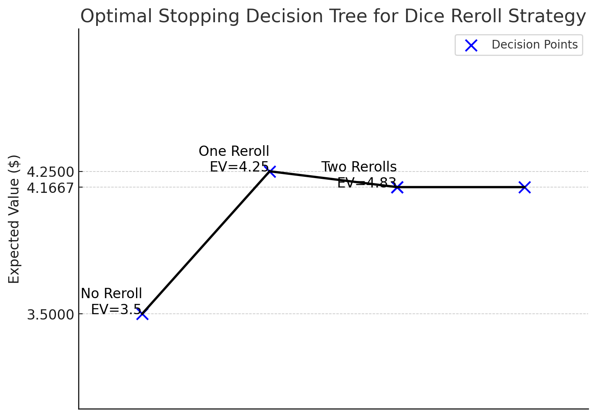
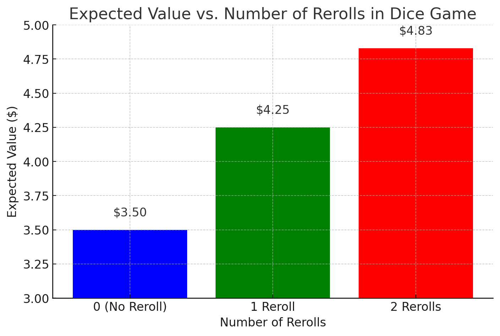

The Optimal Dice Game: How Much Should You Pay to Play?
Imagine a simple gambling game where you roll a six-sided die and win the dollar amount that appears on the die. However, you have a strategic advantage: after rolling, you can either keep the result or choose to reroll. If you reroll, you must take the second roll’s value. How much would you pay to play such a game? And what if you had the option to roll a third time?
GPT 4 response: Breaking Down the Strategy
This problem is a great example of an optimal stopping problem in probability theory. The goal is to maximize the expected payout by deciding when to stop rolling.
Step 1: A Single Roll Without Rerolls
If you could roll only once, the expected value (EV) of the game is simply the average outcome of rolling a fair six-sided die: EV=1+2+3+4+5+66=3.5 EV = = 3.5 A rational investor would thus pay at most $3.50 to play the game if no rerolls were allowed.
Step 2: Adding One Reroll
With one reroll option, the strategy changes: we should keep the first roll only if it is sufficiently high; otherwise, we should reroll.
If the first roll is less than the expected value of rolling once (3.5), rerolling is the better option. Since dice rolls are discrete, we reroll when the first roll is 1, 2, or 3 and keep it otherwise.
By calculating the expected value when following this strategy, we find: [ EV_{2 rolls} = 4.25 ] So, a rational investor should pay up to $4.25 to play with one reroll option.
Step 3: Adding a Second Reroll
Now, let’s extend the game to include a second reroll option. This means that after the first roll, you can either keep it, reroll, or reroll again if you still aren’t satisfied.
Using backward induction, we determine the optimal strategy: - If you reach the third roll, you must accept whatever you get, which has an expected value of 3.5. - If you reroll the second time, you should keep the result if it is 4, 5, or 6, otherwise, roll a third time. - On the first roll, it’s optimal to reroll unless you roll a 5 or 6.
With this strategy, the expected value of playing optimally with two rerolls is: [ EV_{3 rolls} = 4.83 ] Thus, the fair price for playing this game with two rerolls is $4.83.
Key Takeaways
- If you roll once, the fair price is $3.50.
- With one reroll, the fair price increases to $4.25.
- With two rerolls, the fair price further increases to $4.83.
- The more reroll opportunities you have, the higher the expected value—but the increase diminishes with each additional reroll.
Conclusion
This problem beautifully illustrates the power of probability, decision-making, and optimal stopping strategies. If you ever encounter a similar game, now you know exactly how much you should be willing to pay!
Reflection:


Reflection:
This problem was something a little more interesting to me, and it involved probability that I think GPT did a really good job of tackling. It was able to break down the problem into the two parts of the sequence, and then effectively translate that into calculating the rationale that a reasonable individual with all information would make.
Also for my interest, I wanted GPT to create graphs to see how the LLM could graphically and visually interpret the problems. This was interesting since I think that LLMs are sometimes limited in their ability to display information in a way that best connects with humans, and as such, I found that in this case, it did a decent job at tackling its task.